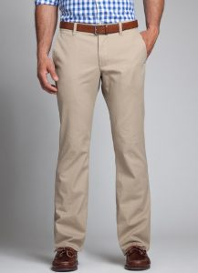
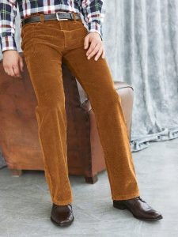
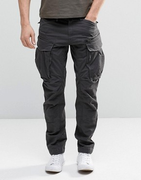
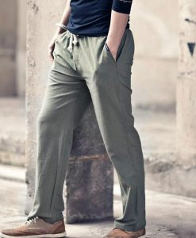

1.celana khaki
Celana khaki merujuk pada 100% bahan katun dan warnanya yang seperti pasir atau debu. Awalnya celana ini dipakai untuk keperluan militer. Akhir-akhir ini celana kaki tidak lagi berwarna gurun pasir, tapi sudah berwarna-warni. Untuk penampilan formal khaki sangat cocok untuk dipakai ke kantor. Celana ini seperti celana formal biasa, tersedia dengan lipit dan tanpa lipit. Pada perkembangan selanjutnya celana khaki dibentuk slim fit atau skinny, dan inilah awal dari celana chino.

2. celana corduroy
Celana corduroy merupakan celana yang terbuat dari bahan corduroy. Kain corduroy merupakan tekstil yang terdiri dari serat yang dipuntir, terbuat dari kain kapas tebal yang memiliki tekstur yang baik dan halus. Serat tersebut ditenun terletak sejajar mirip dengan twill, membentuk pola kain seperti tali. Kain corduroy pada dasarnya berbentuk seperti gerigi dari beludru. Ketika berkunjung ke tempat wisata di Jawa Tengah ini, Anda tidak hanya akan disuguhi dengan jejak sejarah yang eksotis, tapi juga hijaunya pepohonan yang tumbuh di sekitar area candi. Pun karena terletak di perbatasan, candi ini dikelola secara kerja sama antara DIY dan Jawa Tengah.

3. celana cargo
Celana cargo awalnya digunakan tentara Inggris dengan karakteristik memiliki banyak kantong yang berfungsi untuk membawa barang keperluan perang seperti radio dan amunisi. Pada perkembangan selanjutnya, celana cargo banyak dipakai di luar militer. Celana ini mulai populer di tahun 90an. Biasanya celana ini dipakai untuk kegiatan di luar yang memerlukan kenyamanan. Selain itu, karena cargo memiliki banyak kantong, pengguna tidak perlu membawa tas untuk membawa barang-barangnya.

4. celana jeans
Jeans barangkali adalah celana yang paling banyak dipakai oleh pria maupun wanita. Biasanya celana ini dipakai di saat santai. Jeans terbuat dari bahan denim, dungaree, dan katun. Karakteristik jeans berdasarkan bahan berbeda-beda. Jeans dari bahan denim lebih sulit diwarnai dan dijahit, denim diwarnai setelah dijalin. Berbeda dengan denim, dungaree biasanya terbuat dari benang-benang yang sudah diwarnai sebelumnya. Jeans dari bahan katun biasanya jauh lebih lunak daripada denim dan dungaree, pilihan warnanya pun lebih beragam karena lebih gampang diwarnai. Sejarah jeans memiliki dua versi menurut asal katanya. Pertama, jeans dianggap berasal dari kata itali “Genoese” yang merupakan istilah untuk menggambarkan pelaut dari Genoa, Italia, yang mengenakan kain biru berat pada abad ke-17. Kedua, jeans diduga berasal dari kata Perancis “serge de Nimes” yang merupakan jenis kain berat dari Nimes (denim) yang banyak digunakan oleh pekerja Inggris pada abad ke-19. Pembuat jeans populer pertama adalah Jacob Davis, seorang penjahit, dan Levi Strauss, seorang imigran sukses dari Jerman, yang akhirnya jeans dipatenkan atas nama mereka berdua. Jeans menjadi sangat populer di tahun 1950-an dimana banyak anak muda yang memakainya.

5. celana drawstrings
Drawstrings pants merupakan celana yang biasanya dipakai di sekitar rumah untuk berolahraga hingga menjadi piyama untuk tidur. Celana ini sangat kasual dan nyaman dipakai, menimbulkan kesan santai tapi tetap gaya. Biasanya dipakai dalam acara santai seperti piknik, makan malam informal, pergi ke pantai, dan liburan. Bahan yang paling tepat untuk model ini adalah katun. Untuk mendapatkan kesan kasual dapat dipadukan dengan t-shirt polos putih, untuk mendapatkan kesan formal dapat dipadukan dengan t-shirt atau kemeja linen dengan warna senada celana. Menggunakan drawstring dengan ukuran yang kecil dapat mengurangi kenyamanan, sebaiknya pilihlah ukuran yang pas atau lebih besar.
